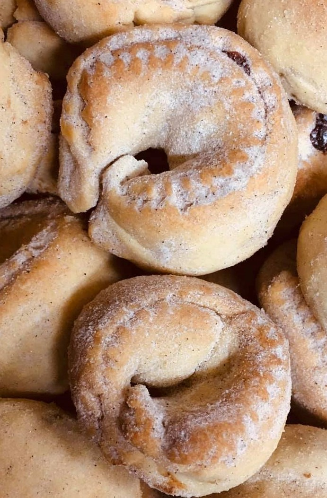

Chiunulille Bocchiglieresi
Ingredienti
Di seguito riportiamo gli ingredienti per preparare le nostre Chiunulille Bocchiglieresi:
- 1/2 litro di olio Evo
- 1/2 litro di vino bianco o vermout
- Sale 40g
- Circa 1,5kg di farina 0
- Cannella
Per il ripieno:
- Cannella
- Noci 400g
- Uva sultanina 800g
- Miele 300g
Preparazione ripieno
- Mettere in una pentola il miele con le noci,l'uva sultanina e la cannella e amalgamare il tutto per un pò.
- Far raffreddare il tutto.
Preparazione della pasta da riempire
- Riscaldare i liquidi in una pentola.
- Versare i liquidi in una bacinella, aggiungere la farina, sale, cannella e impastare il tutto.
- Mettere la pasta su un piano, dividerla in diversi pezzi, stendere la pasta con il mattarello(3-5mm).
- Tagliare dei rettangoli con una rondella lunghi circa 25cm e di larghezza 5cm.
- Prendere l'impasto preparato in precedenza e fatto raffreddare, con l'aiuto di un cucchiaio mettere l'impasto al centro della pasta.
- Chiudere l'impasto a forma circolare e mettere in una teglia rivestita da carta forno.
- Accendere il forno ad una temperatura di 180-200 gradi a forno statico e far cuocere per circa 30 minuti.
- Una volta cotti le mettiamo in un vassoio e decoriamo con dello zucchero a velo.